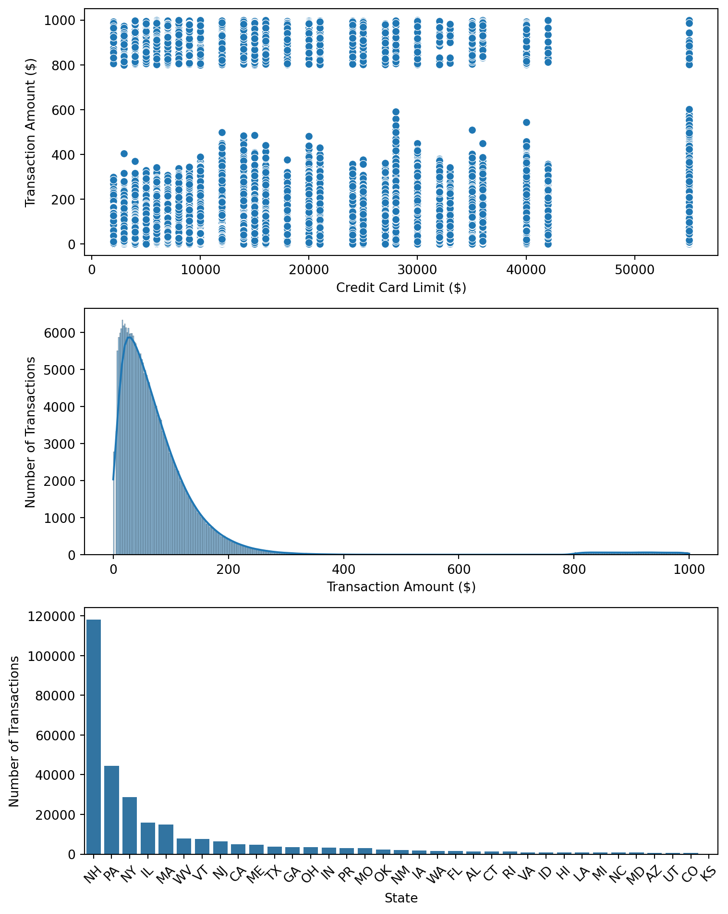
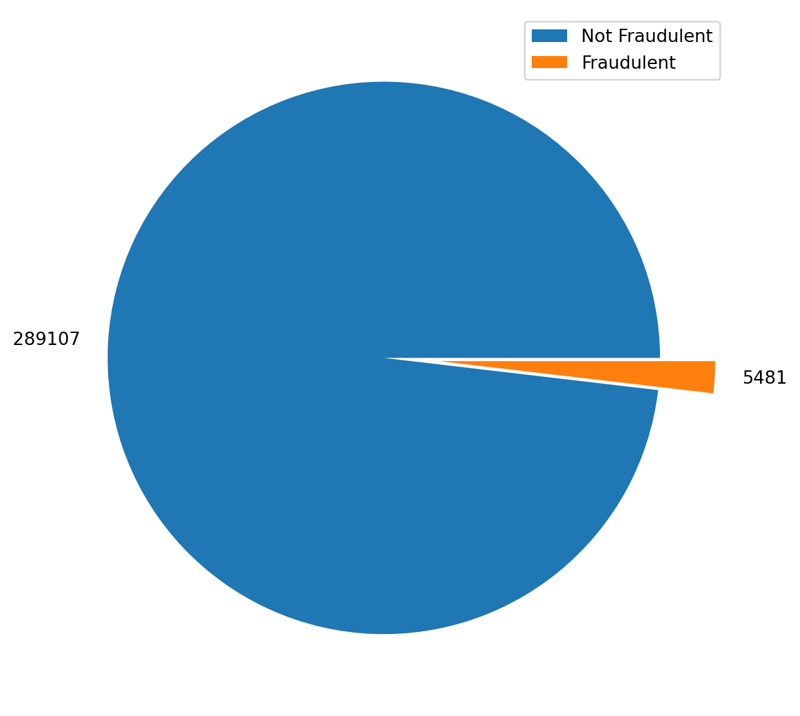

In this post, I will cover a use case for machine learning algorithms known as anomaly (or outlier) detection. The basic principle is this: we can use ML methods to detect data (events, items, etc) that may be rare, suspicious, or otherwise deviant from the standard pattern of a given dataset. This has potential application in a large variety of fields, ranging from defect detection in manufacturing, processing of data, or, as I will show in this post, credit card fraud detection. Anomaly and outlier detection does not represent a subdiscipline of machine learning like clustering, classification, or neural networks do, but rather an area of application of these models. There exist neural network, clustering, and ensemble methods that may all be used to perform detection of deviant data. I will demonstrate how you can use k-means to cluster data and assign anomalous data a flag that says it represents an outlier.
Credit Card Fraud and Detection
While we all wish bad people did not exist in our world, it is a sad fact of life that we must deal with. Credit card fraud has plagued the United States practically since the inception of the credit card, and as such it has been a constant struggle to stay ahead of bad actors that try to commit fraud. Anomaly detection has been used to help identify suspicious activity and prevent future fraud from occurring or at least stop current fraud in progress.
The dataset used in this example can be found here. To begin, I will take the two CSV files provided and merge them together before plotting various different feature relationships. The code used is shown below:
Code
import pandas as pdimport numpy as npimport matplotlib.pyplot as pltimport seaborn as snsfrom collections import Counterfrom warnings import filterwarningsfilterwarnings('ignore')cards = pd.read_csv("CreditCards.csv")transactions = pd.read_csv("CC_Transactions.csv")df = transactions.merge(cards, on='credit_card')state_counts = Counter(df['state'])state_counts =sorted(state_counts.items(), key=lambda x: x[1], reverse=True)states, counts =zip(*state_counts)fig, axes = plt.subplots(3, 1, tight_layout=True)fig.set_size_inches(h=10, w=8);sns.scatterplot(data=df, x='credit_card_limit', y='transaction_dollar_amount', ax=axes[0]);axes[0].set_xlabel("Credit Card Limit ($)");axes[0].set_ylabel("Transaction Amount ($)");sns.histplot(df['transaction_dollar_amount'], kde=True, ax=axes[1]);axes[1].set_xlabel("Transaction Amount ($)");axes[1].set_ylabel("Number of Transactions");sns.barplot(x=states, y=counts, ax=axes[2]);axes[2].set_xlabel("State");axes[2].set_ylabel("Number of Transactions");axes[2].set_xticklabels(states, rotation=45);

Figure 1: Credit Card Limit vs. Transaction Amount
Immediately, it is apparent there are outlier clumps of data that may represent fraudulent activity. We see in the first and second plots that in the higher end transaction amount range, there is a noticable jump in transaction volume. From the first plot, we can see that this is relatively uniform across credit card limits. Potentially, we might see higher purchase amounts as credit limits increase (maybe that assumes responsible consumers, however, which is never a good assumption). Still, the uniformness across card limits appears immediately suspicious. In the third plot, we see another unusual relationship in the number of transactions by state. New Hampshire, a relatively small state in the United States, has an unusually high volume of transactions. Perhaps this is a coincidence and simply a function of the dataset used, but either way, a detection algorithm can make this determination. In the following code segment, I will perform a k-means clustering of the data and predict a label based on which cluster each data entry belongs to. Based on the above graphs, I will assume we have two clusters of data - fraudulent transactions and normal transactions. The cluster label will then be used to determine whether or not the data is anomalous (and therefore fraudulent). I then add the label to the original dataframe for plot generation. Below is the code:
Code
from sklearn.cluster import KMeansfrom sklearn.preprocessing import StandardScaler# Initialize k-means model and scalerkmeans = KMeans(n_clusters=2, random_state=213, n_init=10)scaler = StandardScaler()important_features = ['transaction_dollar_amount', 'Long', 'Lat', 'credit_card_limit']# Create a second dataframe (helps make plots prettier)modified_df = df.copy()modified_df[important_features] = scaler.fit_transform(modified_df[important_features])# Fit model and predict fraudulent datakmeans.fit(modified_df[important_features])modified_df['cluster_label'] = kmeans.predict(modified_df[important_features])fraud_label = modified_df.groupby('cluster_label')['transaction_dollar_amount'].mean().idxmax()modified_df['Fraudulent'] = modified_df['cluster_label'].apply(lambda x: 1if x == fraud_label else0)# Apply the resulting features from the outlier/anomaly detection to the original dataframedf['Fraudulent'], df['cluster_label'] = modified_df['Fraudulent'], modified_df['cluster_label']df.replace({'Fraudulent': {0: 'No', 1: 'Yes'}}, inplace=True)explode = [0, 0.2]fraud_count = df['Fraudulent'].value_counts()plt.figure(figsize=(8, 7));plt.pie(fraud_count, labels=fraud_count.values, explode=explode);plt.legend(['Not Fraudulent', 'Fraudulent']);plt.show()

Figure 2: Results from Anomaly Detection Analysis
We have found that a small percentage of the data appears fraudulent based on the k-means clustering. In some n-dimensional space, where n is the number of features we have, there exists a cluster of data points that represent the fraudulent data. The original three graphs above are ultimately projections of this data from the n-dimensional space onto a two-dimensional plots of features. The k-means model used above discovered this cluster, which would be exceptionally hard for humans to imagine, but apparently not difficult for a computer to perform analysis on. Below, I have generated three more plots that roughly reflect the original three from above, but with the fraudulent data labelled:
The model identified the transactions that appeared fraudulent. It seems to agree with what intuition might suggest: high transaction amounts, regardless of credit limit, flagged as fraudulent with high frequency. Besides this, we do not see much association between state and and fraudulent transactions beyond what is expected (more fraud where there are more transactions). Below, I will display some city data and metrics associated with the clustering of the data:
Silhouette Score: 0.7354083037666868
Calinski-Harabasz Index: 74193.94579757533
Fraudulent Transactions by City:
city
Washington 2059
Houston 384
New York 292
El Paso 233
Dallas 193
...
Montgomery 1
New Haven 1
Wichita 1
Roanoke 1
Baltimore 1
Length: 121, dtype: int64
Based on the Silhouette Score and Calinski-Harabasz Index of our clustering algorithm indicate that our data has formed unique clusters (between the fraudulent and normal data points). Silhouette Score shows that each data point is matched well with other data points in-cluster while being poorly matched with data points outside of it (which shows good clustering). The Calinski-Harabasz Index shows that the clusters are well defined, which our graphics above allow us to confirm qualitatively.
As a side note, it is interesting to see that Washington DC has the highest number of frauduluent transactions in our dataset. Were we to apply a classifier to predict new data points as they came in, we might see that a model might discover this to be an important indicator and that specific cities have higher rates of fraud.